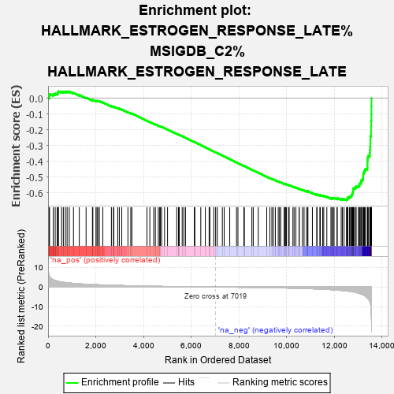

| | | Dataset | rank |
| Phenotype | NoPhenotypeAvailable |
| Upregulated in class | na_neg |
| GeneSet | HALLMARK_ESTROGEN_RESPONSE_LATE%MSIGDB_C2%HALLMARK_ESTROGEN_RESPONSE_LATE |
| Enrichment Score (ES) | -0.6456295 |
| Normalized Enrichment Score (NES) | -2.2331264 |
| Nominal p-value | 0.0 |
| FDR q-value | 0.0 |
| FWER p-Value | 0.0 |
Table: GSEA Results Summary

Fig 1: Enrichment plot: HALLMARK_ESTROGEN_RESPONSE_LATE%MSIGDB_C2%HALLMARK_ESTROGEN_RESPONSE_LATE
Profile of the Running ES Score & Positions of GeneSet Members on the Rank Ordered List
| PROBE | GENE SYMBOL | GENE_TITLE | RANK IN GENE LIST | RANK METRIC SCORE | RUNNING ES | CORE ENRICHMENT | | 1 | CA2 | | | 42 | 6.073 | 0.0136 | No |
| 2 | ID2 | | | 62 | 5.350 | 0.0269 | No |
| 3 | COX6C | | | 217 | 3.766 | 0.0258 | No |
| 4 | MDK | | | 299 | 3.312 | 0.0289 | No |
| 5 | ADD3 | | | 384 | 3.044 | 0.0310 | No |
| 6 | GINS2 | | | 420 | 2.935 | 0.0365 | No |
| 7 | EMP2 | | | 433 | 2.888 | 0.0436 | No |
| 8 | CPE | | | 568 | 2.577 | 0.0407 | No |
| 9 | TSPAN13 | | | 641 | 2.455 | 0.0421 | No |
| 10 | ELOVL5 | | | 727 | 2.291 | 0.0421 | No |
| 11 | TOP2A | | | 799 | 2.162 | 0.0427 | No |
| 12 | HPRT1 | | | 888 | 2.055 | 0.0418 | No |
| 13 | MOCS2 | | | 1066 | 1.869 | 0.0338 | No |
| 14 | SNX10 | | | 1310 | 1.641 | 0.0202 | No |
| 15 | PTPN6 | | | 1594 | 1.424 | 0.0030 | No |
| 16 | RNASEH2A | | | 1862 | 1.271 | -0.0134 | No |
| 17 | CDC20 | | | 1878 | 1.261 | -0.0110 | No |
| 18 | FDFT1 | | | 2009 | 1.197 | -0.0174 | No |
| 19 | ETFB | | | 2052 | 1.173 | -0.0173 | No |
| 20 | CXCL12 | | | 2088 | 1.156 | -0.0167 | No |
| 21 | PLK4 | | | 2151 | 1.126 | -0.0183 | No |
| 22 | CD9 | | | 2296 | 1.058 | -0.0261 | No |
| 23 | NXT1 | | | 2656 | 0.908 | -0.0504 | No |
| 24 | IL6ST | | | 2746 | 0.875 | -0.0546 | No |
| 25 | KIF20A | | | 2753 | 0.872 | -0.0526 | No |
| 26 | SGK1 | | | 2921 | 0.813 | -0.0628 | No |
| 27 | MICB | | | 2989 | 0.789 | -0.0657 | No |
| 28 | ACOX2 | | | 3091 | 0.757 | -0.0711 | No |
| 29 | CDH1 | | | 3350 | 0.670 | -0.0885 | No |
| 30 | DNAJC1 | | | 3469 | 0.636 | -0.0955 | No |
| 31 | PRKAR2B | | | 3515 | 0.620 | -0.0972 | No |
| 32 | DHRS2 | | | 4149 | 0.461 | -0.1431 | No |
| 33 | NMU | | | 4269 | 0.428 | -0.1508 | No |
| 34 | BTG3 | | | 4433 | 0.393 | -0.1619 | No |
| 35 | DCXR | | | 4501 | 0.378 | -0.1658 | No |
| 36 | RBBP8 | | | 4626 | 0.351 | -0.1741 | No |
| 37 | STIL | | | 4683 | 0.342 | -0.1773 | No |
| 38 | IMPA2 | | | 4709 | 0.337 | -0.1783 | No |
| 39 | PLAC1 | | | 4763 | 0.328 | -0.1813 | No |
| 40 | OPN3 | | | 4886 | 0.301 | -0.1896 | No |
| 41 | SORD | | | 5011 | 0.278 | -0.1981 | No |
| 42 | AMFR | | | 5397 | 0.215 | -0.2262 | No |
| 43 | IDH2 | | | 5474 | 0.202 | -0.2313 | No |
| 44 | GLA | | | 5478 | 0.202 | -0.2310 | No |
| 45 | TFPI2 | | | 5501 | 0.199 | -0.2320 | No |
| 46 | CISH | | | 5626 | 0.179 | -0.2408 | No |
| 47 | BLVRB | | | 5693 | 0.169 | -0.2453 | No |
| 48 | CD44 | | | 5765 | 0.158 | -0.2501 | No |
| 49 | LARGE | | | 6136 | 0.109 | -0.2774 | No |
| 50 | DNAJC12 | | | 6156 | 0.106 | -0.2785 | No |
| 51 | PDCD4 | | | 6406 | 0.070 | -0.2969 | No |
| 52 | HSPA4L | | | 6597 | 0.049 | -0.3109 | No |
| 53 | ASS1 | | | 6756 | 0.031 | -0.3226 | No |
| 54 | ST6GALNAC2 | | | 6785 | 0.028 | -0.3246 | No |
| 55 | FRK | | | 6951 | 0.008 | -0.3369 | No |
| 56 | FKBP5 | | | 7029 | -0.002 | -0.3427 | No |
| 57 | TST | | | 7099 | -0.010 | -0.3478 | No |
| 58 | FOXC1 | | | 7311 | -0.034 | -0.3634 | No |
| 59 | SULT2B1 | | | 7389 | -0.042 | -0.3690 | No |
| 60 | GAL | | | 7621 | -0.070 | -0.3861 | No |
| 61 | CDC6 | | | 7904 | -0.104 | -0.4068 | No |
| 62 | CYP26B1 | | | 7965 | -0.111 | -0.4110 | No |
| 63 | FOS | | | 8214 | -0.148 | -0.4291 | No |
| 64 | PDLIM3 | | | 8233 | -0.151 | -0.4300 | No |
| 65 | ZFP36 | | | 8549 | -0.197 | -0.4529 | No |
| 66 | TPBG | | | 8606 | -0.208 | -0.4565 | No |
| 67 | SLC2A8 | | | 8817 | -0.243 | -0.4715 | No |
| 68 | KCNK5 | | | 9172 | -0.313 | -0.4970 | No |
| 69 | SLC1A4 | | | 9302 | -0.340 | -0.5057 | No |
| 70 | SLC26A2 | | | 9388 | -0.359 | -0.5111 | No |
| 71 | GPER1 | | | 9446 | -0.371 | -0.5143 | No |
| 72 | SLC16A1 | | | 9533 | -0.394 | -0.5196 | No |
| 73 | DYNLT3 | | | 9655 | -0.425 | -0.5275 | No |
| 74 | JAK2 | | | 9710 | -0.438 | -0.5303 | No |
| 75 | UGDH | | | 9757 | -0.450 | -0.5325 | No |
| 76 | XBP1 | | | 9901 | -0.487 | -0.5418 | No |
| 77 | PLXNB1 | | | 9923 | -0.494 | -0.5420 | No |
| 78 | RAPGEFL1 | | | 9970 | -0.507 | -0.5441 | No |
| 79 | GALE | | | 9998 | -0.514 | -0.5446 | No |
| 80 | RABEP1 | | | 10085 | -0.538 | -0.5496 | No |
| 81 | TSTA3 | | | 10113 | -0.549 | -0.5501 | No |
| 82 | ATP2B4 | | | 10271 | -0.593 | -0.5602 | No |
| 83 | FGFR3 | | | 10320 | -0.607 | -0.5621 | No |
| 84 | CALCR | | | 10393 | -0.629 | -0.5657 | No |
| 85 | METTL3 | | | 10530 | -0.671 | -0.5740 | No |
| 86 | LAMC2 | | | 10535 | -0.674 | -0.5724 | No |
| 87 | CCNA1 | | | 10670 | -0.727 | -0.5804 | No |
| 88 | BAG1 | | | 10739 | -0.755 | -0.5834 | No |
| 89 | RET | | | 10842 | -0.792 | -0.5888 | No |
| 90 | WFS1 | | | 10895 | -0.813 | -0.5905 | No |
| 91 | DUSP2 | | | 10898 | -0.813 | -0.5884 | No |
| 92 | XRCC3 | | | 11088 | -0.899 | -0.6000 | No |
| 93 | LLGL2 | | | 11276 | -0.991 | -0.6112 | No |
| 94 | PLA2G16 | | | 11277 | -0.992 | -0.6085 | No |
| 95 | CACNA2D2 | | | 11401 | -1.050 | -0.6147 | No |
| 96 | ALDH3A2 | | | 11419 | -1.062 | -0.6131 | No |
| 97 | SFN | | | 11519 | -1.122 | -0.6174 | No |
| 98 | SCARB1 | | | 11563 | -1.142 | -0.6174 | No |
| 99 | ISG20 | | | 11693 | -1.227 | -0.6237 | No |
| 100 | PPIF | | | 11866 | -1.346 | -0.6328 | No |
| 101 | FARP1 | | | 11902 | -1.376 | -0.6316 | No |
| 102 | DHCR7 | | | 11956 | -1.417 | -0.6316 | No |
| 103 | TPD52L1 | | | 11997 | -1.448 | -0.6306 | No |
| 104 | CCND1 | | | 12124 | -1.554 | -0.6357 | No |
| 105 | PTGES | | | 12126 | -1.556 | -0.6315 | No |
| 106 | ST14 | | | 12296 | -1.728 | -0.6394 | No |
| 107 | MAPT | | | 12347 | -1.781 | -0.6382 | No |
| 108 | SEMA3B | | | 12415 | -1.847 | -0.6381 | No |
| 109 | KLF4 | | | 12517 | -1.996 | -0.6401 | Yes |
| 110 | CKB | | | 12551 | -2.051 | -0.6369 | Yes |
| 111 | TOB1 | | | 12572 | -2.075 | -0.6327 | Yes |
| 112 | TIAM1 | | | 12573 | -2.075 | -0.6270 | Yes |
| 113 | JAK1 | | | 12646 | -2.208 | -0.6263 | Yes |
| 114 | CHST8 | | | 12664 | -2.238 | -0.6214 | Yes |
| 115 | TFAP2C | | | 12719 | -2.319 | -0.6190 | Yes |
| 116 | LSR | | | 12733 | -2.348 | -0.6135 | Yes |
| 117 | ABHD2 | | | 12756 | -2.404 | -0.6085 | Yes |
| 118 | SLC27A2 | | | 12761 | -2.414 | -0.6022 | Yes |
| 119 | FAM102A | | | 12782 | -2.462 | -0.5969 | Yes |
| 120 | MYB | | | 12788 | -2.474 | -0.5904 | Yes |
| 121 | ALDH3B1 | | | 12800 | -2.492 | -0.5844 | Yes |
| 122 | MAPK13 | | | 12801 | -2.499 | -0.5775 | Yes |
| 123 | ARL3 | | | 12805 | -2.511 | -0.5708 | Yes |
| 124 | HOMER2 | | | 12843 | -2.573 | -0.5665 | Yes |
| 125 | SLC29A1 | | | 12907 | -2.735 | -0.5636 | Yes |
| 126 | TJP3 | | | 12923 | -2.772 | -0.5571 | Yes |
| 127 | RPS6KA2 | | | 13019 | -3.129 | -0.5556 | Yes |
| 128 | CAV1 | | | 13058 | -3.292 | -0.5493 | Yes |
| 129 | NAB2 | | | 13065 | -3.308 | -0.5407 | Yes |
| 130 | UNC13B | | | 13115 | -3.517 | -0.5346 | Yes |
| 131 | FKBP4 | | | 13138 | -3.613 | -0.5263 | Yes |
| 132 | PAPSS2 | | | 13145 | -3.649 | -0.5167 | Yes |
| 133 | PERP | | | 13201 | -3.922 | -0.5100 | Yes |
| 134 | BCL2 | | | 13215 | -4.003 | -0.4999 | Yes |
| 135 | OLFM1 | | | 13217 | -4.017 | -0.4889 | Yes |
| 136 | SLC22A5 | | | 13220 | -4.031 | -0.4780 | Yes |
| 137 | DLG5 | | | 13247 | -4.170 | -0.4684 | Yes |
| 138 | ITPK1 | | | 13274 | -4.410 | -0.4582 | Yes |
| 139 | CHPT1 | | | 13304 | -4.594 | -0.4477 | Yes |
| 140 | AFF1 | | | 13395 | -5.541 | -0.4392 | Yes |
| 141 | ABCA3 | | | 13398 | -5.624 | -0.4238 | Yes |
| 142 | HR | | | 13399 | -5.624 | -0.4083 | Yes |
| 143 | FLNB | | | 13401 | -5.650 | -0.3928 | Yes |
| 144 | NCOR2 | | | 13407 | -5.756 | -0.3773 | Yes |
| 145 | CELSR2 | | | 13432 | -6.007 | -0.3626 | Yes |
| 146 | SLC7A5 | | | 13495 | -7.246 | -0.3472 | Yes |
| 147 | RAB31 | | | 13502 | -7.411 | -0.3272 | Yes |
| 148 | PRSS23 | | | 13510 | -7.621 | -0.3068 | Yes |
| 149 | IL17RB | | | 13517 | -7.971 | -0.2852 | Yes |
| 150 | SIAH2 | | | 13519 | -8.042 | -0.2631 | Yes |
| 151 | NRIP1 | | | 13522 | -8.347 | -0.2403 | Yes |
| 152 | IGFBP4 | | | 13549 | -11.133 | -0.2116 | Yes |
| 153 | CA12 | | | 13550 | -11.539 | -0.1798 | Yes |
| 154 | SLC9A3R1 | | | 13553 | -12.465 | -0.1456 | Yes |
| 155 | PGR | | | 13562 | -15.758 | -0.1027 | Yes |
| 156 | HSPB8 | | | 13565 | -18.497 | -0.0519 | Yes |
| 157 | MYOF | | | 13567 | -18.889 | 0.0001 | Yes |
Table: GSEA details [plain text format]
Fig 2: HALLMARK_ESTROGEN_RESPONSE_LATE%MSIGDB_C2%HALLMARK_ESTROGEN_RESPONSE_LATE: Random ES distribution
Gene set null distribution of ES for HALLMARK_ESTROGEN_RESPONSE_LATE%MSIGDB_C2%HALLMARK_ESTROGEN_RESPONSE_LATE